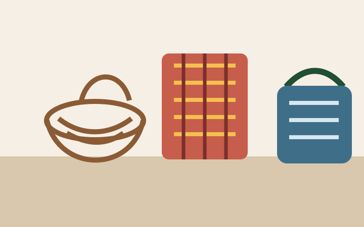

Product photos
Use Nalwoga Judith's smartphone photos after cropping and compression.
CI-10
The gallery comes from the inventory item listing smartphone product and member photographs. Real photos should be compressed and given alt text before launch.
Use Nalwoga Judith's smartphone photos after cropping and compression.

Close-up images help customers see weaving, beadwork, and finish quality.

Member photos support the cooperative's human story after consent is recorded.